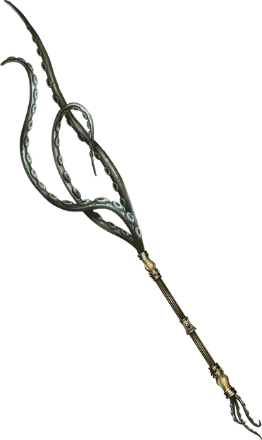

Жезл щупалец
Tentacle Rod
Жезл, редкий (требуется настройка)

Рекомендованная стоимость 4 000 ЗМ
На навершии этого жезла находится три эластичных щупальца. Пока вы держите этот жезл, можете действием Магия направить щупальца, и каждое удлиняется и атакует видимое вами в пределах 15 футов от вас существо. Совершите бросок рукопашной атаки с бонусом +9 за каждое щупальце; при попадании оно наносит 1к6 Психического урона. Если все три щупальца попадают по одной цели, она должна преуспеть в спасброске Ловкости Сл 15, иначе получит состояние Опутанный до тех пор, пока вы не получите состояние Недееспособный, Бонусным действием не освободите цель или пока цель не окажется за пределами 15 футов от вас. Опутанная щупальцами цель получает 3к6 Психического урона в начале каждого своего хода. В конце каждого своего хода цель повторяет этот спасбросок, при успехе оканчивая на себе этот эффект.